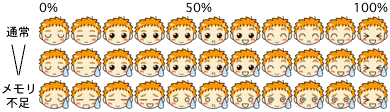

MacFace とは
MacFace は、CPU の使用率とメモリの使用状況を表示するアプリケーションです。情報はドックに表示されるアイコンの表情で表されます。
CPU 使用率が高ければ高いほどテンションが上がっていきます。100%はもうかなりのものです。表情は、0%〜9%、10%〜19%と、10%刻みで変化します。また、メモリが足らなくなってくると、苦しげな表情になります。過去15分以内にページアウトが発生していたらちょっと苦しげに、大量のページアウトが発生したらかなり苦しげになります。

ページインが発生すると右上にマークが、ページアウトが発生すると左上にマークが表示されます。
ページイン ページアウト
詳細な状態はメニューからステータスウインドウを表示させることによって確認することができます。